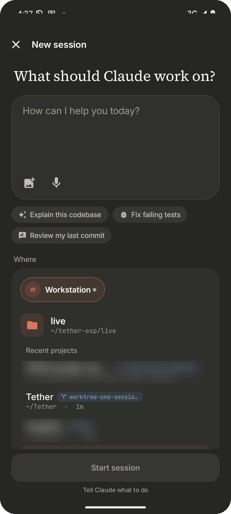
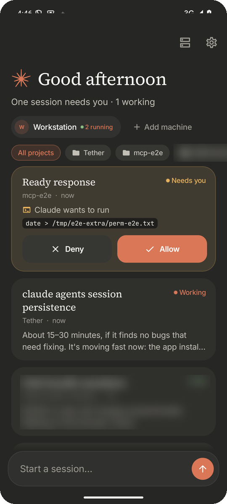

Tether
claude agents,
on your Android phone.
Start, steer and approve Claude Code agents
on your own machines, over SSH.
Open source · No account · Unofficial
claude agents,Start, steer and approve Claude Code agents
on your own machines, over SSH.

